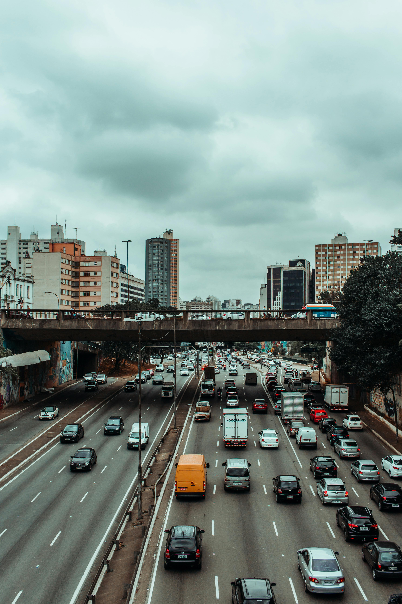
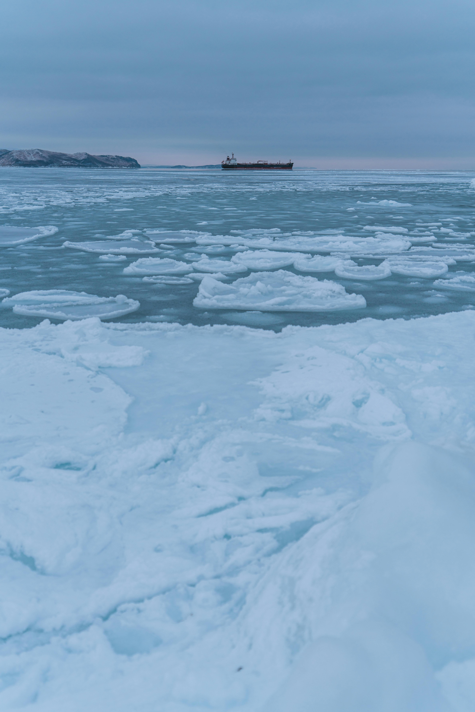

التغير المناخي
الاحتباس الحراري
الاحتباس الحراري هو السبب الرئيسي للتغير المناخي، وينتج عن تراكم غازات الدفيئة مثل ثاني أكسيد
الكربون والميثان في الغلاف الجوي. هذه الغازات تمنع الحرارة من الهروب من الأرض، مما يؤدي إلى
ارتفاع درجة الحرارة العالمية. هذا الارتفاع في درجة الحرارة يُسبب تغيرات كبيرة في الأنماط المناخية، مثل:
زيادة فترات الجفاف في بعض المناطق
ارتفاع عدد الأعاصير والعواصف القوية نتيجة لتغير أنماط الضغط الجوي
ذوبان الجليد القطبي وارتفاع مستوى سطح البحر
بالإضافة إلى ذلك، يؤدي الاحتباس الحراري إلى اضطرابات بيئية مثل تهديد النظم البيئية الطبيعية وانقراض بعض الأنواع

حرق الوقود الأحفوري
الوقود الأحفوري مثل الفحم والنفط والغاز الطبيعي هو المصدر الرئيسي لانبعاثات الكربون. يتم استخدامه في عدة مجالات مثل توليد الكهرباء، تشغيل السيارات، والصناعات الثقيلة. ينتج عن حرق الوقود الأحفوري:
إطلاق كميات كبيرة من ثاني أكسيد الكربون، وهو أحد غازات الدفيئة الرئيسية
إطلاق ملوثات أخرى مثل ثاني أكسيد الكبريت والجسيمات الدقيقة التي تؤثر على جودة الهواء
تأثير سلبي على صحة الإنسان نتيجة التلوث الهوائي
تساهم عمليات استخراج ونقل الوقود الأحفوري أيضًا في انبعاث غازات مثل الميثان أثناء عمليات التعدين والحفر

إزالة الغابات
الغابات تُعتبر أحد أهم الأنظمة الطبيعية التي تخزن الكربون وتمتص ثاني أكسيد الكربون من الغلاف الجوي. ومع ذلك، فإن إزالة الغابات تُسبب:
إطلاق الكربون المخزن في الأشجار والتربة إلى الغلاف الجوي
تقليل قدرة الأرض على امتصاص ثاني أكسيد الكربون
فقدان الموائل الطبيعية للعديد من الكائنات الحية، مما يؤدي إلى تدهور التنوع البيولوجي
إزالة الغابات تتم غالبًا لتوسيع الأراضي الزراعية أو لبناء مدن جديدة، مما يؤدي إلى تفاقم مشكلة التصحر وزيادة خطر الفيضانات

الزراعة الصناعية
الزراعة الصناعية تعتمد بشكل كبير على استخدام الأسمدة الكيماوية والآلات الثقيلة، مما يؤدي إلى:
إطلاق غازات دفيئة مثل أكسيد النيتروز والميثان، خاصة من تربية الماشية
تدهور التربة بسبب الاستخدام المفرط للأسمدة والمبيدات
إزالة الغابات لتحويلها إلى أراضٍ زراعية، مما يزيد من انبعاثات الكربون
كما تساهم الزراعة الصناعية في استهلاك كميات كبيرة من المياه والطاقة، مما يضغط على الموارد الطبيعية

النفايات وإدارة المخلفات
النفايات، وخاصة العضوية منها، تُعتبر مصدرًا رئيسيًا لانبعاث غاز الميثان أثناء تحللها في مدافن النفايات. كما أن:
الحرق غير السليم للنفايات يؤدي إلى إطلاق ملوثات خطيرة مثل الديوكسينات
عدم إعادة التدوير يزيد من استنزاف الموارد الطبيعية
تعزيز إعادة التدوير وتحويل النفايات إلى طاقة يمكن أن يساعد في تقليل الانبعاثات وتحسين إدارة الموارد

النقل والمواصلات
قطاع النقل يعتمد بشكل كبير على الوقود الأحفوري، مما يجعله من أكبر مصادر انبعاثات الكربون. تشمل الآثار السلبية:
إطلاق كميات كبيرة من ثاني أكسيد الكربون من السيارات والطائرات
التحول إلى وسائل نقل عامة مستدامة واستخدام السيارات الكهربائية يمكن أن يقلل من التأثير البيئي للنقل

الصناعة والبناء
الصناعات الثقيلة والبناء تُساهم بشكل كبير في التغير المناخي بسبب:
إطلاق ثاني أكسيد الكربون من تصنيع الأسمنت والصلب
استهلاك كميات كبيرة من الطاقة، غالبًا من مصادر غير متجددة
استخدام تقنيات البناء المستدامة وتحسين كفاءة استهلاك الطاقة يمكن أن يقلل من الانبعاثات

ذوبان الجليد القطبي
ذوبان الجليد يُسبب ارتفاع مستويات البحار، مما يهدد المناطق الساحلية ويزيد من خطر الفيضانات. كما أن ذوبان الجليد:
يُحرر كميات كبيرة من الميثان المحبوس تحت الجليد
يُغير موائل الحيوانات القطبية مثل الدببة القطبية والفقمات

التوسع العمراني
التوسع العمراني يؤدي إلى:
استهلاك مساحات كبيرة من الأراضي الطبيعية
زيادة الانبعاثات الناتجة عن استخدام الطاقة والموارد
تدمير المواطن الطبيعية للكائنات الحية
التخطيط العمراني المستدام يمكن أن يساهم في تقليل الأثر البيئي للتوسع العمراني

النشاطات البشرية الأخرى
النشاطات البشرية مثل التعدين والصيد الجائر تُسبب تدمير النظم البيئية وزيادة الانبعاثات. على سبيل المثال:
التعدين يُطلق غازات مثل الميثان ويُدمر الأراضي الطبيعية
الصيد الجائر يُؤثر على التوازن البيئي ويهدد الأمن الغذائي